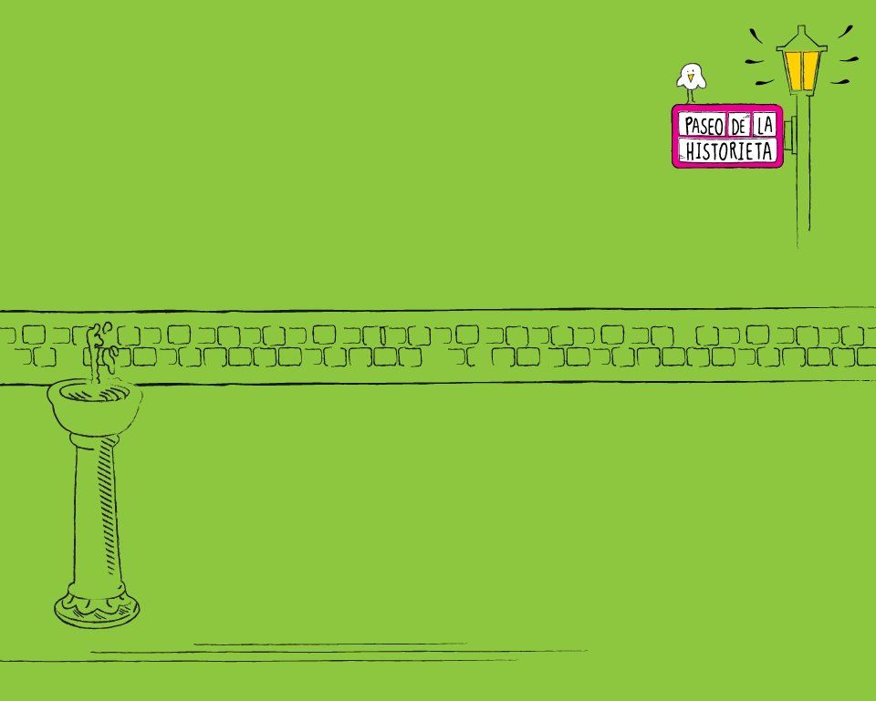

"Paseo de la Historieta"
Términos y Condiciones Generales:
El acceso a esta Aplicación y la utilización de sus servicios está
sujeto a los términos y condiciones generales que se establecen a
continuación, y a las de índole particular que aparecen en sus
anexos o en las carteleras de una determinada página del mismo
(los Términos y Condiciones”).
De continuar Ud. (el “Usuario”) la visita de esta Aplicación, se
entenderá que presta su conformidad con los Términos y Condiciones,
y ha dado expresamente su consentimiento de acuerdo a lo establecido
en la Ley de Protección de Datos Personales N 25.326, Art. 5 sgtes
y CC. y Ley 1845/2006-GCABA para que el Titular haga tratamiento,
cesión y/o transferencia de sus datos personales.
Estos Términos y Condiciones están sujetos a modificaciones, las
que entrarán en vigencia a partir del momento en que sean
publicadas en esta Aplicación o notificadas al Usuario, lo que
ocurra primero.
1. El Servicio:
El servicio provisto por el Gobierno de la Ciudad Autónoma de
Buenos Aires ("el Titular") en esta Aplicación consiste en un
portal de información sobre las historietas más populares de autores
nacionales, y comunicaciones on-line, y supone la aceptación por el
Usuario de estos Términos y Condiciones.
La información contenida en la Aplicación proviene de varias fuentes,
entre las que se cuentan los propios Usuarios del Servicio. Dicha
información no puede considerarse exhaustiva, completa, o que
satisfará todas las necesidades del Usuario.
En su gran mayoría, esa información está meramente destinada a
permitir al Usuario el acceso a una mayor cantidad de datos sobre
el tema de su interés, los que generalmente son provistos por terceros,
sin un efectivo control por parte del Titular, por lo que se sugiere
al Usuario que lea con especial cuidado estos Términos y Condiciones.
1.1. Responsabilidad por la Información contenida en el Servicio:
El Titular no se responsabiliza por los daños y perjuicios que pudiera
ocasionar el uso de la información que provee el Servicio.
El Titular no garantiza que la información que provee el Servicio no haya
sido alterada, luego de su inserción en la Aplicación.
El Titular no será responsable del contenido de los mails y datos aportados
por terceros usuarios.
En caso que el Usuario se sienta agraviado o perjudicado por esa información,
deberá dirigir su acción exclusivamente contra el proveedor de la misma.
En tal supuesto, a pedido del Usuario, el Titular pondrá a su disposición,
en la medida que los posea, los datos necesarios para que pueda hacer
su reclamo.
1.2. Responsabilidad por los servicios adquiridos u ofrecidos a través del Servicio:
El Titular se limita a proveer un medio donde se publican historietas de
autores nacionales, y de comunicación entre los Usuarios.
La Aplicación ha adoptado las medidas de seguridad exigidas por la normativa
vigente, sin embargo, no se responsabiliza por: (i) la inviolabilidad de la
transmisión de los datos cursados por las redes publicas de telecomunicaciones,
o (ii) por cualquier otro medio telemático que no administra o que se encuentran
fuera de su alcance o (iii) de los mensajes que el Usuario curse con otros Usuarios.
1.3. Responsabilidad por Downloads:
Corre por cuenta del Usuario el verificar la inexistencia de virus en las imágenes,
catalogos, programas y materiales que el Usuario descargue en su equipo
("los materiales de download"). En ningún caso el Titular será responsable por
los daños causados por elementos destructivos que pudieran haber introducido
terceros a los materiales de download provistos por el Titular, ni por los materiales
de download suministrados por terceros sin autorización expresa del Titular.
1.4. Sitios vinculados:
El Usuario reconoce que el Titular no tiene control alguno sobre otros sitios a los
que puede acceder a través de links u otro tipo de vinculación telemática
(los Sitios Vinculados). Por lo tanto el Titular no se hace responsable por el
contenido de los Sitios Vinculados.
1.5. Varios:
i. Equipamiento: El Titular del Servicio no está obligado a proveer ningún equipo
o programa de software para acceder al Servicio. El Usuario deberá contar con todos
los recursos necesarios para ello, incluidos los de telecomunicaciones.
ii. Política de Uso del Servicio: El Usuario acepta la Política de Uso del Servicio
establecida en el Anexo A, y sus modificaciones. El Titular se reserva el derecho
de eliminar o modificar cualquier información, comunicación, material de download,
o mensaje que en su opinión viole la Política de Uso, sin que ello de al Usuario
derecho o reclamo alguno.
iii. Derechos de Autor: La información contenida en la Aplicación es propiedad
intelectual del Titular, y/o de terceros sobre los que el Titular tiene derecho.
La información y los materiales de download sólo podrán ser utilizados siempre que
sus fines sean no comerciales. La retransmisión o publicación de cualquier elemento
contenido en el Sitio se encuentra prohibida sin el previo consentimiento escrito del
Titular. En los casos en que se autorice, el Usuario deberá citar al autor como
fuente y no podrá modificar este material. La información contenida en la Aplicación
es propiedad intelectual del Titular, y/o de terceros sobre los que el Titular
tiene derecho, y podrá ser consultada por el Usuario para su uso personal, privado y
no lucrativo, siempre que en todo caso se indique el origen y/o autor de los mismos
y que, en su caso, aparezca el símbolo del copyright y/o notas de propiedad del Titular.
En ningún caso el acceso a la Aplicación implica ningún tipo de permiso, renuncia,
transmisión, licencia o cesión total ni parcial de dichos derechos por parte del Titular,
salvo que se establezca por escrito expresamente lo contrario. El Usuario reconoce
y acepta que todos los derechos de propiedad industrial e intelectual sobre los
contenidos y/o cualesquiera otros elementos insertados en la Aplicación (incluyendo, a
modo de ejemplo y a título meramente enunciativo y no limitativo, todos aquellos
elementos que conforman la apariencia visual, imagen gráfica y otros estímulos
sensoriales de las páginas web que conforman la Aplicación ("look and feel", marcas,
logotipos, nombres comerciales, textos, imágenes, gráficos, diseños, sonidos, bases de
datos, software, diagramas de flujo, presentaciones, material de lectura, arquitectura
de navegación, así como los códigos fuente de las páginas web) pertenecen a Gobierno
de la Ciudad Autónoma de Buenos Aires y/o a terceros que le han cedido legalmente sus
derechos. A tales efectos, se entenderá como Aplicación todas aquellas creaciones
incorporadas y expresadas por cualquier medio y/o soporte tangible o intangible, conocido
o por conocer, que sea objeto de protección por las disposiciones normativas vigentes en
materia de propiedad intelectual e industrial. Los presentes Términos y Condiciones
Generales de Uso de la Aplicación no confieren a los Usuarios ningún otro derecho de
utilización, alteración, explotación, reproducción, distribución o comunicación pública
de la Aplicación y/o de sus Contenidos distintos de los aquí expresamente previstos.
Cualquier otro uso o explotación de cualesquiera derechos estará sujeto a la previa y
expresa autorización específicamente otorgada a tal efecto por el Titular o el tercero
titular de los derechos afectados. Queda terminantemente prohibida la utilización de
tales elementos, su total o parcial reproducción, comunicación y/o distribución con
fines comerciales o lucrativos, así como su modificación, alteración, descompilación
y/o cualquier otro acto de explotación de la Aplicación, sus páginas y/o de los
contenidos que en ellas se incorporan. Para cualquier otro uso distinto de los expresamente
permitidos, será necesario obtener el consentimiento previo por escrito del titular
de los derechos de que se trate.
iv. Control de Contenidos: El Titular no controla las comunicaciones y materiales que
los Usuarios ingresan al Servicio. El Titular no se hace responsable por el contenido de
estas comunicaciones y materiales, sin perjuicio de lo cual se reserva el derecho de
bloquear el acceso o de eliminar cualquier comunicación o material que considere (a)
abusivo, difamatorio, obsceno, falso o engañoso, (b) violatorio de derechos de propiedad
intelectual de un tercero o (c) violatorio de las disposiciones del Anexo A, y/o (d) sea
contrario a su ideario.
v. Compromiso de Indemnidad: El Usuario se obliga a mantener indemne al Titular, sus
dependientes, licenciantes, proveedores y licenciatarios de los daños resultantes (incluyendo
los costos de defensa) de cualquier acto o hecho ilícito imputable al Usuario o a un
tercero que utilice el Sitio.
vi. Jurisdicción y Ley Aplicable: Toda cuestión entre el Titular y el Usuario estará
regida por las leyes de la República Argentina, con exclusión de toda norma que remita a la
aplicación de una ley extranjera. Cualquier controversia será sometida a los Tribunales
de la Ciudad de Buenos Aires que correspondan.
vii. Renuncias. La demora u omisión del Titular en exigir el estricto cumplimiento de
estos Términos y Condiciones no podrá interpretarse como renuncia a sus derechos.
viii. Nulidad parcial: En caso en que alguna disposición de estos Términos y
Condiciones fuera declarada nula, ello no afectará la validez de las demás.
ix. Todas las marcas son registradas por los respectivos Titulares indicados en el
material. Toda otra marca o logotipo que aparezca en el Sitio pertenece al Titular
y el Usuario no podrá utilizarlas sin expresa autorización de su propietario.
x. Notificaciones: Las notificaciones al Usuario podrán cursarse por (i) correo electrónico,
(ii) comunicaciones generales en las carteleras de información del Servicio, o (iii) por
nota enviada por correo al domicilio indicado en oportunidad de inscribirse en los Servicios.
Las notificaciones del Usuario al Titular del Servicio podrán cursarse por correo electrónico
a postmaster@buenosaires.gob.ar.-
2. Política de Uso del Servicio
El uso del Servicio está sujeto a las normas que se establecen en este apartado. Su
incumplimiento puede dar lugar a la suspensión o cancelación de su acceso al Servicio y en la
eventual adopción de acciones legales de parte del Titular.
i. Requisitos: El Usuario deberá ser una persona capaz conforme la Ley Argentina, y deberá
inscribirse con su propio nombre, y demás datos personales que se le requieran.
El Usuario deberá informar al Titular lo antes posible cualquier cambio en la información provista
en ocasión de su inscripción. El Titular se reserva el derecho de suspender
cualquier prestación de la Aplicación en caso que el Usuario sea menor de edad.
ii. Clave de Acceso: la inscripción puede exigir que el Usuario se identifique ("USER ID")
y que registre una Clave Personal (la "Clave Personal") elegida por el propio Usuario.
El Titular se reserva el derecho de rechazar o modificar la Clave Personal elegida en caso
que la misma afecte principios de convivencia, la moral y las buenas costumbres.
iii. Comunicaciones On-line: El Usuario reconoce que las comunicaciones on-line transcurren
en tiempo real y no pueden ser controladas por el Titular. Sin perjuicio de ello,
el Titular se reserva el derecho de excluir cualquier comunicación que considere ofensiva o
violatoria a esta Política.
iv. Está prohibido al Usuario: (a) Transmitir mensajes anónimos o bajo un seudónimo.
(b) Transmitir mensajes o información injuriosa, intimidatoria, engañosa, difamatoria,
obscena, o que viole el derecho a la intimidad o la propiedad intelectual o industrial de terceros,
o que pueda resultar perjudicial para éstos o para el Titular. El Titular no
pretende desalentar el derecho de libre expresión, pero se reserva el derecho de tomar las acciones
que correspondan en caso que el Servicio sea utilizado para difundir información
de este tipo. (c) interferir en el uso del Servicio a otros Usuarios. (d) transmitir archivo/s que
contenga/n virus o cualquier otro elemento contaminante o destructivo.
(e)enviar e-mails no solicitados en forma masiva a otros Usuarios.
v. Acceso: Los Usuarios no deben permitir la utilización de su cuenta por terceros. Toda información
que se envíe utilizando la cuenta del Usuario será considerada enviada por éste.
3. Política de Privacidad Online:
Este apartado tiene por objeto informar al Usuario acerca de la política que el Titular sigue
en relación a sus Datos Personales tal como se lo define en la Ley de Protección
de Datos Personales N 25.326 y la Ley 1845/2006 (“la Política”).
Esta Política puede ser modificada por múltiples razones, como ser el empleo de nuevas tecnologías
de procesamiento o tratamiento de sus datos o información, los cambios que
pudiéramos introducir en nuestros Sitios y/o Aplicaciones.
Toda vez que modifiquemos esta Política, la misma será actualizada en nuestros servicios, de modo
que Ud. pueda ejercer sus derechos conforme a la Ley de Protección de Datos
Personales Nº 25.326 (Art. 5, Sgtes, y CC) y Ley N 1845/2006.
Si Ud. tiene alguna pregunta respecto a nuestra Política de Privacidad, por favor escríbanos
a: postmater@buenosaires.gob.ar.
3.1. Información Personal:
"Paseo de la historieta" sólo utilizarán los datos referidos a su identidad como usuario
(entendiéndose por tal su nombre, dirección, teléfono, y dirección de e-mail para los fines
solicitados por Ud. Al aceptar estos Términos y Condiciones, Ud. ha dado su consentimiento del modo
establecido en el Artículo 5 de la Ley de Protección de Datos Personales. De este modo, Ud. autoriza
expresamente a que el Titular trate, ceda o transfiera sus Datos Personales a terceros que presten
servicios al Titular a los fines del objeto con que se registraron tales datos.
3.2. Envío de mensajes:
"Paseo de la historieta" podrá enviarle mensajes destinados a confirmar su inscripción a cualquiera
de los Servicios, o notificarle cualquier modificación de los Términos y Condiciones de los sitios
referidos anteriormente o de esta Política de Privacidad. "Paseo de la historieta" podrá enviarle
e-mails informando o promocionando otros servicios de participación ciudadana.
Si desea estar incluido en la lista de personas a quienes se envía ese tipo de mensajes, deberá indicarlo
marcando “opt-in” cuando nos proporcione sus Datos Personales. Por el contrario, si Ud. deseara ser excluido
de esa lista, al inscribirse deberá marcar “opt-out”. Si Ud. hubiera elegido “opt-in”, podrá en cualquier
momento seleccionar “opt-out”, siguiendo el procedimiento indicado al final de este Apartado.
En determinadas circunstancias, y dadas las características de la tecnología utilizada en nuestro Sitio,
si Ud. no eligiera “opt-in” al inscribirse, o si posteriormente eligiera “opt-out”, podría verse privado
de algunos de los beneficios para los que se requieren contar con sus Datos Personales.
3.3. Excepciones a la reserva de los Datos Personales y otras informaciones:
En cumplimiento de la Ley de Protección de Datos Personales N 25.326, Art. 5, Siguientes. y CC. el
Usuario entiende y acepta expresamente que quedan exceptuados del compromiso de reserva
los Datos Personales en aquellas ocasiones donde una orden judicial, o una autoridad administrativa
que posee competencia, la solicite.
Finalmente, le rogamos que tome en cuenta que al suministrar cualquier información sobre su persona
a través de comunicaciones on-line, como por ejemplo en los Boletines de Mensajes o
en cadenas de emails, o salas de chateo, dicha información puede eventualmente ser recopilada y
utilizada por terceros sin su consentimiento.
Aún cuando el Titular realiza sus mejores esfuerzos en proteger su privacidad, y proteger sus
Datos Personales conforme a la Ley de Protección de Datos Personales Nº 25.326 habiendo
registrado y actualizado–entre otras tareas- la base de datos por ante la Dirección Nacional
de Protección de Datos Personales bajo el Numero ______, no podemos garantizar la seguridad
de la información que Ud. suministre a través de comunicaciones on-line, y por lo tanto corre
por su cuenta el revelar esa información por esos medios.
3.4. Privacidad de los niños:
Dado que los menores de edad pueden no estar en condiciones de comprender nuestra Política,
ni decidir válidamente sobre las opciones disponibles, instamos a todos los padres, o tutores
o adultos a cargo de los menores que accedan al Sitio "Paseo de la historieta" a que participen
activamente en las actividades que el menor realice en Internet, y que les enseñen cómo
proteger su privacidad.
La administración del sitio "Paseo de la historieta" han adoptado las siguientes medidas
para proteger la privacidad de sus usuarios menores de edad:
a. Los menores de edad no deberán remitir al Sitio de "Paseo de la historieta" ningún tipo de
Datos Personales sin el previo consentimiento de sus padres o tutores.
En todos los casos el Titular entiende que el menor lo ha hecho con el consentimiento de sus padres
o tutores, y ante cualquier inconveniente ellos serán los responsables ante el
Titular o terceros.
b. Los usuarios menores no podrán estar inscriptos en el Sitio de "Paseo de la historieta" por su cuenta.
3.5. Cookies:
Mediante la tecnología Cookie o el rastreo IP "Paseo de la historieta" puede acceder a cierta
información del Usuario ("Información No Específica"). A la fecha, la Información No Específica que
recopilamos consiste en información sobre el navegador que utiliza, el tipo de computadora, sus
sistemas operativos, sus proveedores del servicio de Internet, las secciones de nuestro sitio que Ud. visita,
los vínculos que Ud. establece y otra información similar. La Información No Específica es utilizada sólo por
nosotros o los operadores de nuestro Sitio, a fin de conocer cuáles son las áreas preferidas de nuestro Sitio,
qué tecnología se está utilizando, y tratar de este modo de mejorar constantemente nuestro Servicio.
Eventualmente, y en cumplimiento de la Ley de Protección de Datos Personales, Nº 25.326, Art. 28 y cc.
podremos disociar esta información con fines estadísticos, pero en ningún caso compartiremos con terceros
sus Datos Personales conforme lo extablece la Ley 25.326.
Su navegador, al igual que otros, puede estar programado para aceptar Cookies. En tal caso, si Ud.
no desea brindar Información No Específica, puede programar su navegador
para rechazar Cookies, o para avisar cuando un sitio intenta enviarle Cookies.
En tal caso, tome en cuenta que algunos sitios de Internet, así como algunas de las secciones del
Sitio de "Paseo de la historieta" pueden no funcionar correctamente.
4. Sitios de Terceros:
A través del sitio "Paseo de la historieta" se puede establecer un vínculo con sitios o
servicios de terceros.
Pese a que inicialmente hemos visitado los sitios vinculados, nos es imposible controlar
sus contenidos o los vínculos que a su vez ellos ofrecen, ya que muchos de ellos son
permanentemente modificados y tienen su propia política de privacidad. Por ello, aconsejamos
que antes de suministrar cualquier tipo de información a un sitio vinculado verifique
la política de privacidad que éste aplica.
5. Política de seguridad:
La protección de su privacidad y de sus Datos Personales es una de nuestras metas. Hemos
tomado todas las medidas a nuestro alcance tecnológico y económico a fin de asegurar
su privacidad y la de sus Datos Personales. Dentro de esas limitaciones extremamos las precauciones
en la transmisión de la información entre su computadora hacia nuestros sistemas,
pero ello no asegura que las claves empleadas para proteger su información no puedan ser descifradas.
6. Corrección de los Datos Personales:
Ud. podrá consultar o acceder a sus Datos Personales libremente archivados en nuestra base de datos
conforme lo establece el Art. 13, 14, y sgtes y cc de la Ley de Protección de Datos Personales.
Para ello, y tal como informamos en oportunidad de registrar la base de datos, le rogamos nos escriba
a postmaster@buenosaires.gob.ar.
Luego de consultados los datos, y en caso que los mismos fueran incorrectos, Ud. podrá rectificarlos
y/o actualizarlos conforme lo establece el Art. 16 de la Ley de Protección de Datos Personales.
7. Opción de remoción (“Opt-out”):
Siempre que el Titular envíe información electrónica como parte de Servicios se proveerán los medios
para que UD. –receptor de esa información-pueda ser removido de la lista de distribución.
8. Aceptación de estos términos:
La utilización de cualquiera de los Servicios del sitio "Paseo de la historieta" importa la aceptación
de nuestra Política de Privacidad. Si Ud. no está de acuerdo con esta política, por favor no utilice el
sitio "Paseo de la historieta".
De igual forma, si UD. continua haciendo uso del sitio "Paseo de la historieta" después de que hayamos
hecho cualquier modificación a esa Política, ello importará su aceptación a esas modificaciones.
9. Jurisdicción competente y ley aplicable:
Toda cuestión entre el Titular y el Usuario estará regida por las leyes de la República Argentina, con
exclusión de toda norma que remita a la aplicación de una ley extranjera. Cualquier controversia será sometida
a los Tribunales de la Ciudad de Buenos Aires que correspondan.Ciudad Autónoma de Buenos Aires, 1 de Julio de 2012.
10. Versión.
Los Términos y Condiciones generales incluidos en el presente se corresponden con la versión 1 de revisión 1.
En forma sucinta: TYC-1-1.
11- Premios
Los 10 primeros participantes que en la contestación de la trivia, logren los puntajes perfectos (10 respuestas correctas de 10 preguntas), recibiran un kit del paseo de la historieta, compuesto por:
-1 lapiz
-1 libro con stikers
-1 Señalador magnetico
-1 Postal del Paseo de la Historieta